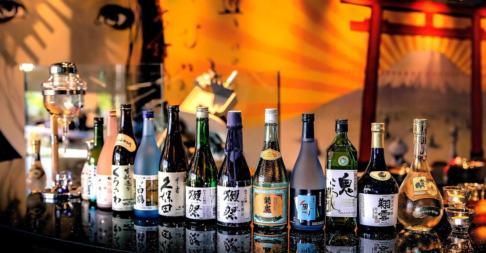

Essenszeiten
| Frühstück: | 07:00 - 10:30 Uhr |
| Mittagessen: | 11:30 - 16:00 Uhr |
| Abendessen: | 17:00 - 22:00 Uhr |
Weihnachts-Event
Feiern Sie Weihnachten auf besondere Weise mit unserem exklusiven Menü, das japanische und westliche Weihnachtsgerichte kombiniert.Genießen Sie die festliche Dekoration und verbringen Sie besinnliche Momente mit Ihren Liebsten.
Getränke
Unsere Getränkekarte bietet eine breite Auswahl an hochwertigen und köstlichen Getränken, die perfekt zu unseren Gerichten passen. Vom traditionellen grünen Tee über frische Fruchtsäfte bis hin zu exklusiven Matcha-Spezialitäten bieten wir für jeden Geschmack etwas. Besonders unsere Matcha-Getränke zeichnen sich durch ihre vielfältigen Zubereitungen aus – sei es als Latte, Tee oder in Kombination mit anderen Zutaten für ein unvergessliches Geschmackserlebnis.
